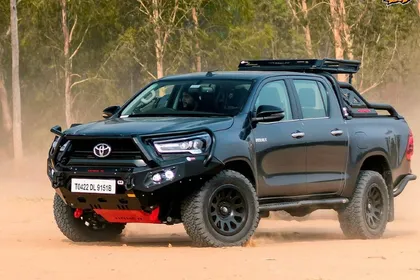

Toyota
- Toyota Hilux Price: This premium pickup’s price range is between ₹ 33.99 lakh to ₹ 36.80 lakh (ex-showroom).
- Toyota Hilux Variants: The Hilux is available in two variants-Standard and High.
- Toyota Hilux Engine and Transmission: The Hilux gets a 2755 cc, 4-cylinder diesel engine which produces 200hp of power with a maximum torque of 420 Nm. It is a 4-wheel drive type, the transmission is a 6-speed manual and an automatic.
- Toyota Hilux Features: The pickup is equipped with an 8-inch touchscreen system, push-button start/stop, auto climate control, a powered driver’s seat, and cruise control.
- Toyota Hilux Safety: Toyota has equipped the Hilux with seven airbags, electronic stability control, front and rear parking sensors, and a reversing camera.
- Toyota Hilux Rivals: There is no direct competitor to the Hilux in India right now, however, popular commercial pickups that are on offer in India include the famous Mahindra Bolero Pickups, Tata Yodha, and Isuzu D-Max and V-Cross.
